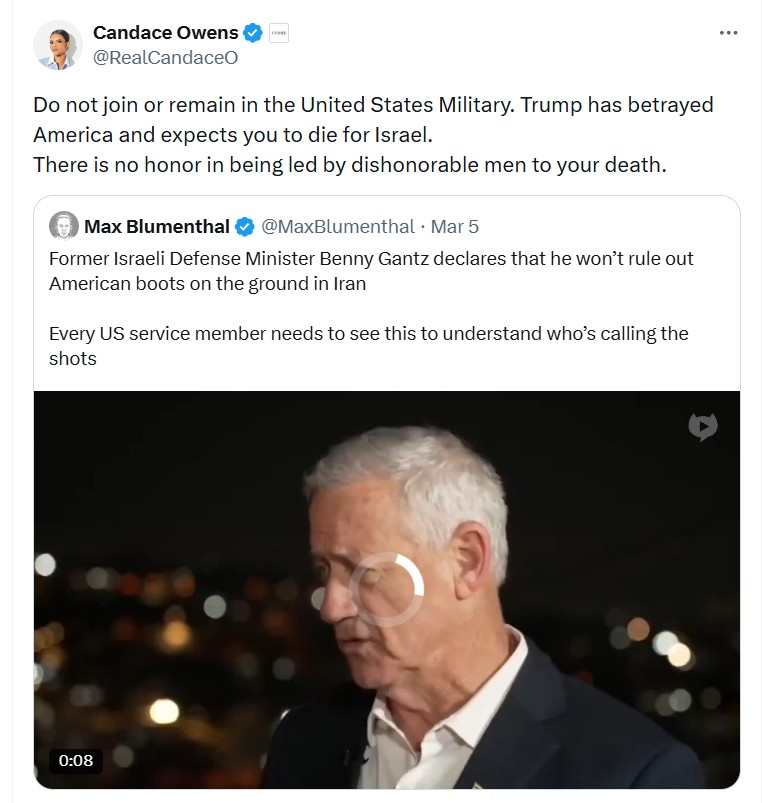

She Liked a Post About Drinking Christian Blood
In early 2024, Candace Owens liked a post on X that asked Rabbi Shmuley Boteach if he was "drunk on Christian blood again." That is the blood libel. It goes back to the 12th century, when mobs across Europe accused Jewish communities of murdering Christian children and using their blood in religious rituals. It was a lie then and it is a lie now, but it was used to justify pogroms, expulsions, and mass killings for 800 years. Candace Owens endorsed it with one tap of her thumb in front of millions of people.
Three years earlier, she was on Fox News talking about free markets and personal responsibility. She was the face of Turning Point USA. She sat across from the President. She was a mainstream conservative commentator with a legitimate audience and legitimate commentary. How she went from there to promoting medieval blood libel is the subject of this chapter, and if you have someone in your life who followed her down this road, you already know why it matters.
How It Happened
This is how wolves in sheep's clothing operate. They build trust first. They say the things you agree with, earn your loyalty, and position themselves as one of you. Then they start testing how far you will follow. Each step pushes the boundary just enough that it feels like a natural extension of what came before. If the audience does not push back, the next step goes further. By the time the mask comes off, the audience has traveled so far from where they started that they do not recognize what they have become. Owens followed this playbook in public, and the receipts are timestamped.

Candace Owens, X post, March 6, 2026. The woman who built her career on patriotism telling service members to quit.
Why This Is the Most Dangerous Pattern on This Site
Think about how conspiracy content normally reaches people. Someone has to go looking for it. You do not accidentally stumble onto the X22 Report. You do not find yourself on a Devolution Power Hour livestream by mistake. Dave Fishman's 810,000 Rumble followers typed "X22 Report" into a search bar. Derek Johnson's 110,000 followers sought out Law of War content on purpose. Those audiences walked through a door they opened themselves. The grifters in Chapter 11 are standing inside a room waiting for people to come to them.
Candace Owens walked into the room where normal people were already sitting and brought the content to them. Her audience was not searching for conspiracy theories. They were watching Fox News after dinner. They were scrolling through conservative commentary during their lunch break. They were sharing political memes with friends who voted the same way they did. They trusted Owens because she had earned that trust over years of saying things they agreed with on platforms they respected. When she started shifting the framework, they followed her because the trust was already established. They did not evaluate each new claim on its merits. They evaluated it based on who was saying it, and the person saying it had been right about everything else they cared about.
This is the mechanic that makes the on-ramp so dangerous. A conspiracy theorist on Telegram asks you to trust an anonymous stranger. That is a hard sell. Candace Owens asks you to keep trusting someone you have trusted for years. That is an easy sell. The content is the same. The delivery system is what changes everything. When the same conspiracy framework that lives on 8chan and Telegram comes out of the mouth of someone you have watched on television for half a decade, your brain does not flag it the way it would if a stranger said it. It passes through the filter because the messenger already has clearance.
Here is what that looks like in practice, step by step:
Nobody who arrives at Step 5 remembers choosing to go there. They remember agreeing with a commentator about media bias. They remember feeling validated when someone on television said what they were thinking. They remember the language shifting, but it happened so gradually that each individual shift felt like a natural continuation of the conversation they were already having. By the time someone says "the Jews control everything" in their presence and it does not shock them the way it would have three years ago, the pipeline has finished its work. The person at Step 5 is not the same person who entered at Step 1, but they cannot see the distance they have traveled because each step was too small to notice on its own.
What It Does to Families
Candace Owens was made by Turning Point USA. Charlie Kirk gave her a stage. TPUSA events gave her the audiences that became her base. That organization was the launchpad for everything she has built since. Now she is actively trying to tear it apart and going after Erika Kirk personally. The people who stood beside her are targets now, not because they changed, but because they did not follow her where she went.
The Pattern Repeats
Owens is the clearest case because it played out in public with documentation at every stage. But the on-ramp pattern repeats whenever a mainstream figure starts using conspiracy language.
Tucker Carlson
Tucker Carlson hosted the most-watched cable news program in America for years, and during that time he brought the "Great Replacement" theory into the living rooms of millions of Americans who had never heard of it. The theory claims that elites are deliberately importing immigrants to replace the existing population and dilute its political power. It originated in white nationalist circles in France and was popularized online by people like the Christchurch shooter, who titled his manifesto after it. Carlson did not use those words. He did not need to. He framed the same idea in language his audience would accept: elites are trying to "replace" you, your votes are being "diluted," demographic change is being "engineered." His viewers heard it from a man in a suit on a network they had watched for decades, and because it came from that source, it did not sound like a conspiracy theory. It sounded like news. That is how the on-ramp works at the highest level. The framing crosses from fringe to mainstream without the audience ever noticing the transition, because the messenger is someone they already trust.
Roseanne Barr
Roseanne Barr was one of the most beloved comedians in America for thirty years. Her sitcom was a cultural landmark. When ABC rebooted it in 2018, it drew over 18 million viewers in its premiere. Then she posted a racist tweet about former Obama advisor Valerie Jarrett, and ABC canceled the show the same day. For most people, that would have been a moment to step back and reassess. Barr did the opposite. She dove into the conspiracy world and never came back. She began recording videos with Cirsten Weldon, a Q influencer who later died after refusing medical treatment for COVID because she believed the "deep state" had poisoned her. Barr appeared at Turning Point USA's America Fest in 2023 and built a relationship with Juan O'Savin, who is actually Wayne Ronald Willott, an insurance investigator from Seattle whose followers believe he is JFK Jr. returned from the dead. JFK Jr. died in a plane crash in 1999. Barr's audience followed her from network television into a world where a dead president's son is alive and an insurance investigator is a secret government operative. That is the distance the on-ramp can cover when the person at the top has enough name recognition.
Jim Caviezel
Jim Caviezel played Jesus Christ in Mel Gibson's "The Passion of the Christ," and he has leveraged the cultural weight of that role to promote conspiracy content in a way that no other figure in this chapter can match. At the Health and Freedom Conference in 2021, Caviezel stood on stage and promoted adrenochrome conspiracy theories, which claim that powerful elites harvest a chemical compound from the blood of terrorized children. He used language pulled directly from the "Sound of Freedom" promotional circuit and wove it together with Q-adjacent narratives about child trafficking and elite cabals. The power of Caviezel as an on-ramp is unique because his audience does not process his endorsement the way they would process an endorsement from a politician or a podcaster. They are looking at the man who portrayed Christ on screen and who carries that association into every public appearance. When that face tells you something is true, it bypasses the part of your brain that evaluates evidence and goes straight to the part that responds to faith. No Telegram channel, no Rumble livestream, no paid Substack can replicate that kind of authority. It is not intellectual authority. It is spiritual authority borrowed from a movie role, and it is devastatingly effective.
Megyn Kelly
Megyn Kelly spent years as one of the most prominent anchors on Fox News before moving to NBC and then launching her own media operation. Her career gives her a specific kind of credibility that conspiracy figures desperately need: journalistic legitimacy. When Kelly interviews someone, her audience assumes that person has been vetted, that their claims have been checked, that they are being presented as credible because a professional journalist has deemed them worthy of airtime. That assumption is the entire value of the on-ramp. A conspiracy figure who appears on a Rumble livestream is preaching to people who already believe. The same conspiracy figure sitting across from Megyn Kelly is being introduced to an audience that expects journalistic standards. The guest's fringe views inherit the host's mainstream credibility whether the host intends it or not, and once that credibility transfers, the audience carries it with them into content that Kelly herself would never endorse.
How to See It Coming
The on-ramp does not announce itself. It does not come with a warning label. It happens gradually, and the people on it rarely realize they are moving until they look back and cannot recognize where they started. But there are signals, and if you learn to read them, you can protect yourself and the people around you.
The first signal is the shift from specific criticism to vague conspiracy framing. There is a world of difference between "this policy is wrong because of these specific consequences" and "they do not want you to know the truth." The first is political engagement. The second is conspiracy language. When a commentator you follow stops naming specific policies and starts invoking unnamed forces, the framework has changed and you should notice it.
The second signal is how they handle consequences. When Candace Owens was fired from The Daily Wire for promoting antisemitic content, she did not say she made a mistake. She said "I am finally free." When someone frames accountability as persecution and persecution as proof they were telling the truth, they are running a grift. They are converting a career failure into a brand, and that brand will generate more revenue than the job they lost because the persecution narrative is more engaging than policy commentary ever was.
The third signal is who they start associating with. Mainstream figures have mainstream circles. When a mainstream commentator starts appearing alongside the people profiled in Chapter 11, the transition is underway. The association is not accidental. It is the conspiracy industry absorbing a new asset, and the mainstream figure's audience comes with them.
The fourth signal is monetization. After losing a mainstream platform, watch whether the person pivots to direct revenue: paid subscriptions, exclusive content, merchandise, speaking tours. The persecution narrative becomes the product. The product funds a lifestyle. The lifestyle requires the narrative to continue. At that point, the person cannot afford to come back to reality even if they wanted to, because their income depends on staying exactly where they are.
Sources
- ADL: Candace Owens Backgrounder
- CNN: Candace Owens Out at The Daily Wire (March 2024)
- Washington Post: Owens Departs After Antisemitic Commentary
- Rolling Stone: Owens Out Following Antisemitic Comments
- Jerusalem Post: How Israel and Antisemitism Are Dividing the Right
- Slate: The Daily Wire Feud Over Antisemitism
- CNN: Owens Won't Take Back Kirk Conspiracies After Meeting Erika Kirk
- CBS News: Erika Kirk Has One Word for Owens: "Stop"
- Washington Post: Owens Draws MAGA Anger Over Kirk Claims
- Hollywood Reporter: Inside Owens' Crusade Against Erika Kirk
- Owens on X: "Do not join the military. Trump has betrayed America" (March 2026)
- Wikipedia: Assassination of Charlie Kirk